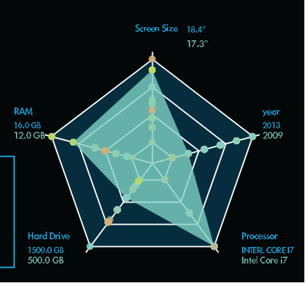
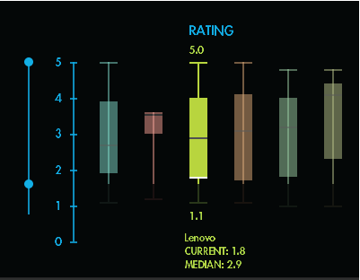
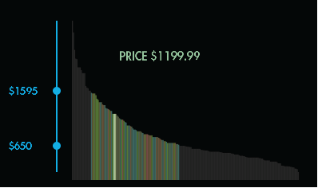
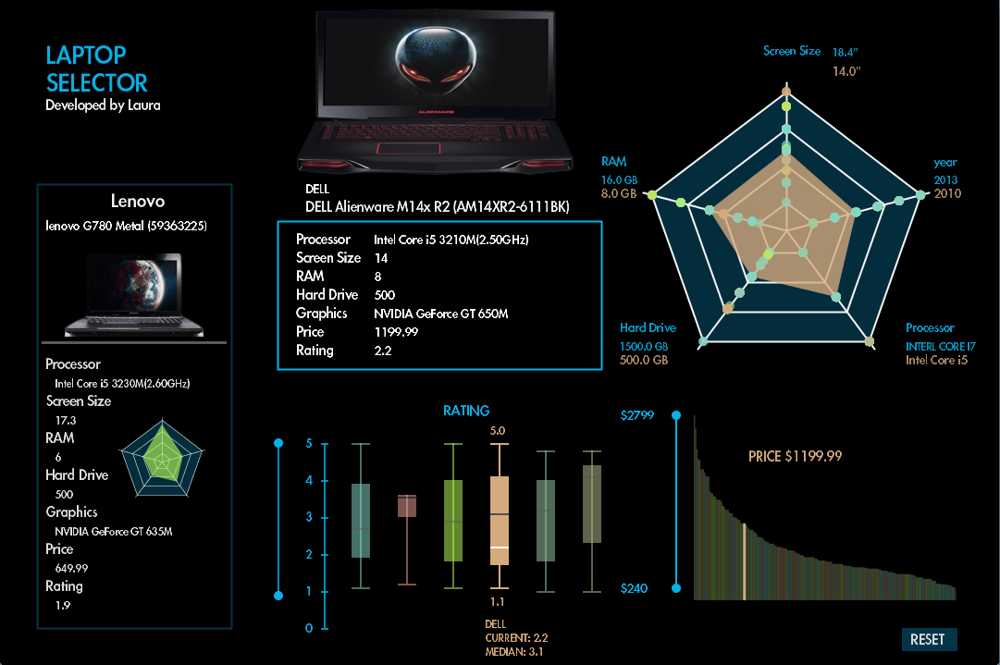

UX/UI DesignGroup of 2
Interface DesignerInteraction Designerdataset structure designer
ProcessingPhotoshopExcel
3 week projectApr 2014 - Apr 2014
The main audience of this application is people who are planning to buy a laptop but needing application/visualization to compare the functionality between two or more laptops. With this, user do not have to read lines of descriptions and go though possibly all laptops before found the idea model. The application uses 3 sets of visual graph to helps users to do easy compare between multiple models.
I led design the interface, structure of the dynamic database, user experience and built the digital prototype. The dataset consists of the recent laptop information along with their model, capacity, RAM, processer and so on. It contains ten dimensions. For visualization the main dynamic presentations are box plots, star graph and bar chart.
StarGraph
The star graph is the main selecting/showing factor. It includes capacity, RAM, processor, screen size and year dimensions 
BoxPlots
Box plots are not only used to show and limit the rating of brands, but also work as filters of brands, where user can select and select. 
BarChart
Bar chart visualizes the price scale, which not only shows the price but also shows the result after filtering out. In addition, the reason to have graphs individually for price and rating is because some of users might only want to know about how many laptops that they can choose in a range of price they can afford or they only consider the brand which is in top rating. 
Main Canvas
On main canvas, there are two display areas that show the details of laptops. Two selectors are for easy comparison between models. Result of selected will link the picture of each computer in order to let user have an idea of how does the product look like because appearance can be another factor that alter buyer’s decision. 
Throughout the process of the project, I developed my skills of data management, dynamic data representation, and various usage of graphics. Further enhanced my coding skill to reflect design idea.